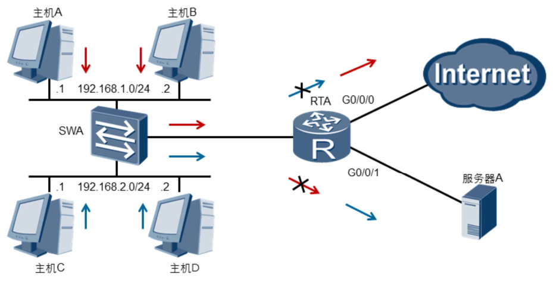
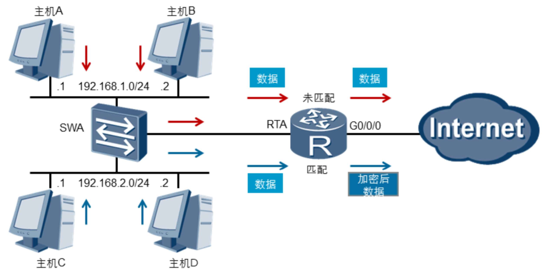
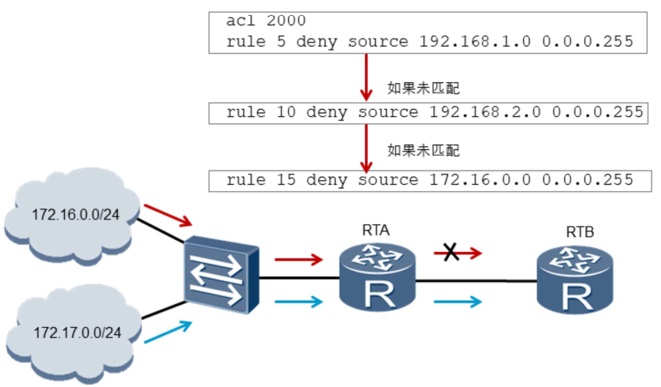
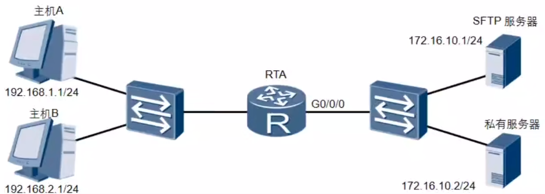

计网之 ACL 访问控制列表
访问控制列表 ACL（Access Control List）是一系列用于识别报文流的规则集合。这里的规则是指描述报文匹配条件的判断语句，匹配条件可以是报文的源地址、目的地址、端口号等。设备依据 ACL 规则识别出特定的报文，并根据预先设定的策略对其进行处理，从而可以实现堆网络访问行为的控制、限制网络流量、提高网络性能、防止网络攻击等。
ACL 应用场景
允许或拒接流量通过
ACL 可以通过定义规则来允许（permit）或拒绝（deny）流量的通过。例如，下图允许主机 A 和 B 访问互联网、不允许访问服务器，主机 C 和 D 与其相反。
我们可以使用如下 basic ACL 规则实现，并对接口 G0/0/0 和 G0/0/1 出方向上的报文进行过滤：
1 | [RTA]acl basic 2000 |
匹配后执行特定行为
ACL 可以根据需求来定义过滤的条件以及匹配条件后所执行的动作。例如，下图对主机 C 和 D 在入方向（inbound）进行匹配，并对匹配到的感兴趣流量进行加密之后再转发。
ACL 分类
根据不同的划分规则，ACL 可以有不同的分类。最常见的三种分类是基本 ACL、高级 ACL 和二层 ACL，其中高级 ACL 可以定义比基本 ACL 更准确、更丰富、更灵活的规则。
ACL 类型 |
编号范围 |
规则制定依据 |
|---|---|---|
| 基本 ACL | 2000-2999 | 报文的源 IP 地址 |
| 高级 ACL | 3000-3999 | 报文的源 / 目的 IP 地址、源 / 目的端口号以及协议类型等信息 |
| 二层 ACL | 4000-4999 | 报文的源 / 目的 MAC 地址、链路层协议类型等二层信息 |
ACL 规则
一个 ACL 由多条 deny 或 permit 语句组成。设备逐条匹配规则，找到匹配的规则后执行对应动作，不再继续匹配后续规则。
本示例中，RTA 收到了来自两个网络的报文。默认情况下，RTA 会依据 ACL 的配置顺序来匹配这些报文。网络 172.16.0.0/24 发送的数据流量将被 RTA 上配置的 ACL2000 的规则 15 匹配，因此会被拒绝；而来自网络 172.17.0.0/24 的报文不能匹配访问控制列表中的任何规则，因此 RTA 对报文不做任何处理，而是正常转发。
需要注意的是，ACL 中定义的这些 规则可能存在重复或矛盾，规则的匹配顺序决定了规则的优先级，ACL 通过设置规则的优先级（这里是 ACL ID 越小优先级越高）来处理规则之间重复或矛盾的情形。
ACL 的规则匹配顺序有以下两种：
- 配置顺序：按照规则编号由小到大进行匹配。默认情况按编号步长为 5 添加规则，用户也可指定编号添加规则，若指定的编号已经存在对应的规则，则替换它。
- 自动排序：按照「深度优先」原则由深到浅进行匹配，各类 ACL 的「深度优先」排序法则如表所示。
| ACL 类型 | 排序原则 |
|---|---|
| 基本 ACL | a. 先判断规则的匹配条件中是否包含 VPN 实例，包含者优先 b. 如果 VPN 实例的包含情况相同，再比较源 IPv4 (IPv6) 地址范围，较小者优先 c. 如果源 IPv4 (IPv6) 地址范围也相同，再比较配置的先后次序，先配置者优先 |
| 高级 ACL | a. 先判断规则的匹配条件中是否包含 VPN 实例，包含者优先 b. 如果 VPN 实例的包含情况相同，再比较协议范围，指定有 IPv4 (IPv6) 承载的协议类型者优先 c. 如果协议范围也相同，再比较源 IPv4 (IPv6) 地址范围，较小者优先 d. 如果源 IPv4 地址范围也相同，再比较目的 IPv4 (IPv6) 地址范围，较小者优先 e. 如果目的 IPv4 (IPv6) 地址范围也相同，再比较四层端口号的覆盖范围，较小者优先 f. 如果四层端口号的覆盖范围无法比较，再比较配置的先后次序，先配置者优先 |
| 二层 ACL | a. 先比较源 MAC 地址范围，较小者优先 b. 如果源 MAC 地址范围相同，再比较目的 MAC 地址范围，较小者优先 c. 如果目的 MAC 地址范围也相同，再比较配置的先后次序，先配置者优先 |
比较 IPv4 地址范围，就是比较通配符掩码（反向掩码）中 “0” 位的多少，”0” 位越多，范围越小。比较 IPv6 地址范围，就是比较地址前缀长度，前缀越长，范围越小。比较 MAC 地址范围，就是比较掩码中 “1” 位的多少，”1” 位越多，范围越小。
高级 ACL
高级 ACL 可以定义比基本 ACL 更准确、更丰富、更灵活的规则。假设下图中，我们要求主机 A 不可以访问 SFTP 服务器的 FTP 服务，主机 B 不可以访问私有服务器。
1 | [RTA]acl advanced 3000 |
上述进行了高级 ACL 的配置：
- rule 5 拒绝了主机 A 访问 SFTP 服务器的 FTP 服务，但 telnet 服务（目的端口为 23）和 ping（ICMP 协议）访问不受限制；
- rule 10 拒接了主机 B 访问私有服务器的所有 tcp 流量；
- rule 15 作为最低优先级，允许了任意 ip 协议。
- 最后，在流量的出方向进行包过滤。
tcp 流量有握手机制，假如我们 仅在RTA 的 G0/0/0 方向限制 SFTP 服务器或私有服务器的流量进入（inbound），这会影响到 tcp 握手的建立，导致主机 A 的 tcp 流量无法连接到服务器。
参考资料：